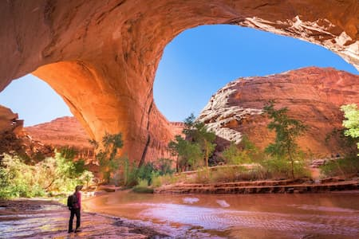

White Water Rafting Trips

The company's mission is to help everyone cultivate team spirit, mutual cooperation, and patience.


The company's mission is to help everyone cultivate team spirit, mutual cooperation, and patience.
Spaces are limited for our upcoming seasonal excursions.
Contact Us to Book Your AdventureFrom beginner-friendly floats to exciting whitewater rapids, our guided rafting trips provide unforgettable experiences for families, friends, and adventure seekers. That would be good.
Less than three hours from Seattle, an alpine landscape beckons. With jagged peaks, panoramic views and more than 300 glaciers, North Cascades National Park is often referred to as the American Alps. The park has 400 miles of trails to hike, over 200 species of birds to watch, a unique hidden town to visit, and plenty of fishing opportunities. Enjoy the solitude, peace and challenge that hiking in this beautiful park offers. Yes I like the activity.

As big as Canyonlands is, it's dwarfed by the 1.8 million acres that make up Grand Staircase-Escalante National Monument, the largest national monument in the country. This region abuts Lake Powell to the south, Capitol Reef National Park to the north, Bryce Canyon National Park to the west, and is proximate to both I-15 and I-70. So getting there is easy…deciding which section to explore, not so much.

Western North Carolina is one of the most scenic regions in the country, with some of the best views, waterfalls, and hiking trails. Located about an hour west of Asheville, our small towns of Cashiers, Cherokee, Dillsboro, and Sylva are nestled between America’s two favorite National Park sites, the Blue Ridge Parkway and Great Smoky Mountains National Park. Let our quaint mountain towns serve as your hub for regional adventure.
| Trip Name | Location | Duration | Difficulty | Price |
|---|---|---|---|---|
| Beautiful Mountain Adventure | Seattle, Washington | 1 Day | Easy | $120 |
| Grand Staircase Expedition | Utah | 3 Days | Moderate | $350 |
| North Carolina Rapids | Jackson County, NC | Half Day | Intermediate | $150 |